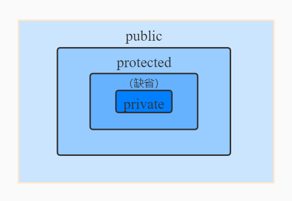

Java面向对象（上）
1. 类和对象的创建
1.1 相关概念
属性 = 成员变量 = filed = 域 = 字段
方法 = 成员方法 = 函数 = method
创建类的对象 = 类的实例化 = 实例化类
1.2 创建类和对象
（1）创建类
class 类名 {
// 定义属性和成员方法
}
（2）创建对象（类的实例化）
类名 对象名 = new 类名();
1.3 类和对象的使用
- 创建类，设计类成员
- 创建类的对象
- 通过
对象.属性或对象.方法调用类结构
注意
如果创建了一个类的多个对象，则每个对象都独立的拥有一套类的属性。（非static的）意味着，修改一个对象的属性a，不影响其他对象的a
将p1变量保存的对象:地址值赋给p3,导致p1和p3指向了堆空间中的同一个对象实体。
Person p3=p1;
1.4 属性(成员变量) vs 局部变量
class User {
//成员变量
String name;
int age;
boolean isMale;
// 局部变量
public void talk(String language) {
System.out.println("我们使用" + language + "进行交流");
}
public void eat() {
String food = "烙饼";
System.out.println("北方人喜欢吃" + food);
}
}
相同点
- 定义变量的格式: 数据类型变量名=变量值
- 先声明，后使用
- 变量都有其对应的作用域
不同点
在类中声明的位置的不同
（1）属性:直接定义在类的一对得内
（2）局部变量：声明在方法内、方法形参、代码块内、构造器形参、构造器内部的变量
权限修饰符
属性：可以在声明属性时，指明其权限，使用权限修饰符
常用的权限修饰符：
private、public、缺省、protected默认初始化值的情况
（1）属性：类的属性，根据其类型，都具有初始化值。
- 整型（byte、short、int、long）:
0 - 浮点型（float、double）:
0.0 - 字符型（char）：
0或'\u0000' - 布尔型（boolean）：
false - 引用数据类型（类、数组、接口）：
null
（2）局部变量：没有默认初始化值，这意味着在调用局部变量之前，一定要显示赋值。特别的，形参在调用时，赋值即可。
- 整型（byte、short、int、long）:
二者在内存中加载的位置不同
（1）属性加载到堆空间
（2）局部变量加载到栈空间
2. 类中方法
2.1 类中方法的声明和使用
方法：描述类应该具有的功能
比如 Array：sort()、binarySearch()、toString()、equals()
声明格式
权限修饰符 返回值类型 方法名(形参列表) {
方法体
};
static、final、abstract来修饰的方法，后面再讲
public void eat() {}
public void sleep(int hour) {}
public String getName() {}
public String getNation(String nation) {}
2.2. 方法声明的说明
关于权限修饰符
Java规定的4种权限修饰符：
private、public、缺省、protected（封装性再说）
目前默认方法的权限修饰符为
public。返回值类型
有返回值
方法中必须
return无返回值：
void不能返回。一定要返回，只能
reutrn;
方法名：标识符，见名识义。
形参：单个或多个。
方法体：功能。
2.3 方法的使用
- 方法的使用中，可以调用当前类的属性或方法。
- 方法中不能定义方法。
2.4 方法的重载
Overload：在一个类中，允许同名方法的存在，只要其参数的个数或类型不同。
判断是否重载：和方法的权限修饰符、返回值类型、形参名无关，只与参数个数和类型有关。
2.5 代码块
代码块在类中声明,类似一个没有名称的方法体。
代码块分为 实例块 和 静态块。
（1）实例块：每次创建对象时自动调用。
{
// 任何符合语法的 Java 代码
}
（2）静态块：类加载时自动调用，仅一次，与是否创建对象无关。
static {
// 任何符合语法的 Java 代码
}
示例
public class T2 {
public static void main(String[] args) {
Demo d = new Demo();
System.out.println("-----");
System.out.println(Demo.num);
System.out.println("-----");
Demo d1 = new Demo();
}
}
class Demo {
public static int num = 10;
{
System.out.println("实例块1");
}
{
System.out.println("实例块2");
}
static {
System.out.println("静态块1");
}
static {
System.out.println("静态块2");
}
}
3. 面向对象思想
3.1 对象是类的实例化
3.2 面向对象编程内容三大主线
① 类及类成员；属性、方法、构造器；代码块、内部类
② 面向对象三大特征：封装、继承、多态
③ 其他关键字：this、super、abstract、interface、final、import、pakage
3.3 创建对象三大步
- 创建类
- 类的实例化
- 使用对象
3.4 匿名对象
所创建的对象没有赋给变量，而是直接拿来调用。
使用场景：在一个方法或者对象里面暂时性的需要使用该对象。
PhoneMall mall = new PhoneMall();
mall.show(new Phone());
3.5 对象数组
当我们需要多个有序的对象时，一个一个去创建太麻烦了，使用 对象数组 可以很好解决问题。
使用步骤：
- 声明对象数组
- 循环创建数组中每一个对象
举例：
声明 ObjArray 对象
class ObjArray {
private String name;
private int age;
ObjArray() {}
public String getName() {
return this.name;
}
public int getAge() {
return this.age;
}
}
定义并创建对象数组
public class ObjArrayTest {
public static void main(String[] args) {
ObjArray[] objs = new ObjArray[10];
for (int i=0;i<objs.length;i++)
objs[i] = new ObjArray();
System.out.println(objs[0].getName()); //null
System.out.println(objs[1].getAge()); //0
}
}
3.6 可变个数形参
方法中可以接收同一类型的多个实参，可变形参形式为：
func(数据类型 ... 形参名)
类似于：（两者不属于重载关系，不共存）
func(数据类型[] 形参名)
// 形参为数组
可变形参必须放在参数列表末尾。
4. 值传递机制
4.1 变量的赋值
若变量为基本数据类型，此时赋值的是变量所保存的 数据值。
若变量是引用数据类型，此时赋值的是变量所保存的 地址值。
4.2 值传递机制
方法形参的传递机制：值传递
形参：方法定义时，声明的小括号里的参数
实参：方法调用时，实际传递给形参的数据
值传递机制：
- 若参数为基本数据类型，则形参接收的实参为实参真实存储的数据值
- 若变量是引用数据类型，此时形参接收的是实参所保存的 地址值。
5. 面向对象特征之一：封装与隐藏
5.1 问题引入
隐藏对象内部的复杂性，只对外公开简单的接口。便于外界调用，从而提高系统的可扩展性、可维护性。
通俗的说，把该隐藏的隐藏起来，该暴露的暴露出来。这就是封装性的设计思想。
当我们创建一个类的对象以后，我们可以通过 "对象.属性" 的方式对对象的属性进行赋值。这里的赋值操作要受到属性的数据类型和存储范围的制约。除此之外，没有其他制约条件。但是，在实际问题中，需要给属性添加额外的限制条件，这个条件不能在属性声明时体现，我们只能通过方法进行限制条件的添加。
同时，避免用户直接使用 "对象.属性"，即设置 private
5.2 封装性体现
- 将类的属性
xxx私有化（private），同时，提供公共（public）的方法（getXxx）来获取和设置（setXxx）属性。 - 不对外暴露私有的方法
- 单例模式
5.3 四种权限修饰符
- Java规定的四种权限修饰符：
private、缺省、protected、public - 4 种权限可以用来修饰类的内部结构：属性、方法、构造器、内部类
- 修饰类：缺省、public
| 修饰符 | 类内部 | 同一个包 | 不同包的子类 | 同一个工程 |
|---|---|---|---|---|
| private | yes | |||
| （缺省） | yes | yes | ||
| protected | yes | yes | yes | |
| public | yes | yes | yes | yes |
图示如下：

6. 构造器（构造方法、constructor）
6.1 构造器的作用
- 创建对象
- 初始化对象的值
6.2 说明
- 如果没有显式的定义类的构造器的话，则系统默认提供一个空参 的构造器
- 定义构造器的格式: 权限修饰符类名(形参列表){}
- 一个类中定义的多个构造器，彼此构成重载
- 一旦我们显式的定义了类的构造器之后，系统就不在提供默认的空参构造器
6.3 JavaBean
- JavaBean 是一种Java语言写成的可重用组件
- 所谓 JavaBean，是指符合如下标准的类：
- 类是公共的
- 有一个无参构造器
- 有属性，属性有对应的get、set方法
6.4 UML 类图
- +表示 public 类型，-表示 private 类型，#表示 protected 类型
- 方法的写法:
方法的类型(+、-)方法名(参数名:参数类型): 返回值类型 - 若方法有下划线表示为构造器
7. 关键字——this
7.1 this 的使用
this 理解为当前对象或当前正在创建的对象。
- this 可以用来修饰属性、方法、构造器
- this 修饰属性和方法
- 在类的方法中，我们可以使用
this.属性或this.方法的方式，调用当前对象属性或方法。但是，通常情况下，我们都选择省略this.。特殊情况下，如果方法的形参和类的属性同名时，我们必须显式的使用this.变量的方式，表明此变量是属性，而非形参。 - 在类的方法中，我们可以使用
this.属性或this.方法的方式，调用当前正在创建对象属性或方法。但是，通常 情况下，我们都选择省略this.。特殊情况下，如果方法的形参和类的属性同名时，我们必须显式的使用this.变量的方式，表明此变量是属性，而非形参。
- 在类的方法中，我们可以使用
- this 调用构造器
构造器中可以调用构造器，使用this()实现。
当构造器中有些操作与其他构造器中的一些内容有重复的是时候，就可以在构造器中调用其他构造器，防止冗余。 - 如果一个类中有 n 个构造器，则最多有 n - 1 构造器中使用 了"this (形参列表)'
- 规定: "this (形参列表) "必须声明在当前构造器的首行
8. pakage 关键字
- 为了更好的 实现项目中类的管理，提供包的概念
- 使用 pakage 声明类或接口所属的包，声明在源文件的首行。
- 包，属于标识符，遵循一定规范，见名知意。
- 每出现一次
.，则代表一层文件目录。 - 同一个包下，不允许命名同名接口、类。
不同包下可以。
9. import 关键字
- 在源文件中显示的使用
import结构导入指定包下的类、接口。 - 声明在包的声明和类的声明之间。
- 若导入多个结构，则并列写出即可。
- 使用
xxx.*的格式，表示导入该包下所有类。 - 若使用的类、接口是在
Java.lang包下的，则不需要导入包。 - 使用的类是本包下定义的，则无需导入。
- 若源文件中，使用了不同包下的同名类，则必须有一个类需要以全类名（包含包名）的形式定义。
- 使用
xxx.*的方式表明可以调用 xxx 包下的所有结构。但是如果使用的是 xxx 子包下的结构，则仍需要显 使用xxx.*方式表明可以调用 xxx 包下的所有结构。但是如果使用的是 xxx 子包下的结构，则仍需要显式导入。 import static导入指定类或接口中的静态结构: 属性或方法。import static Java.lang.System.*; out.println(123);